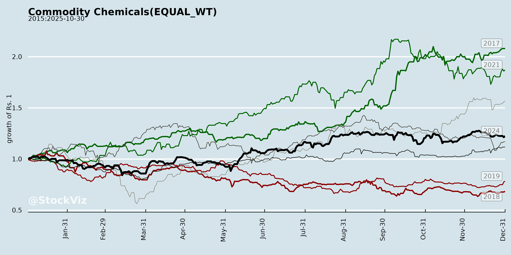
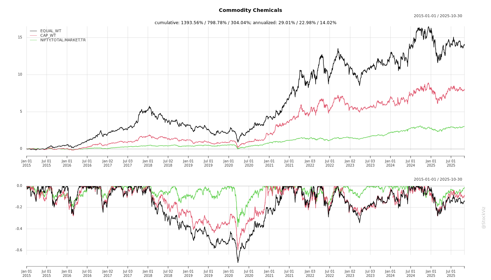
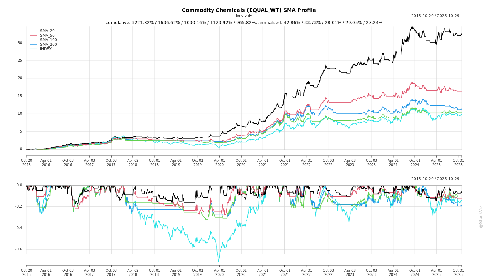
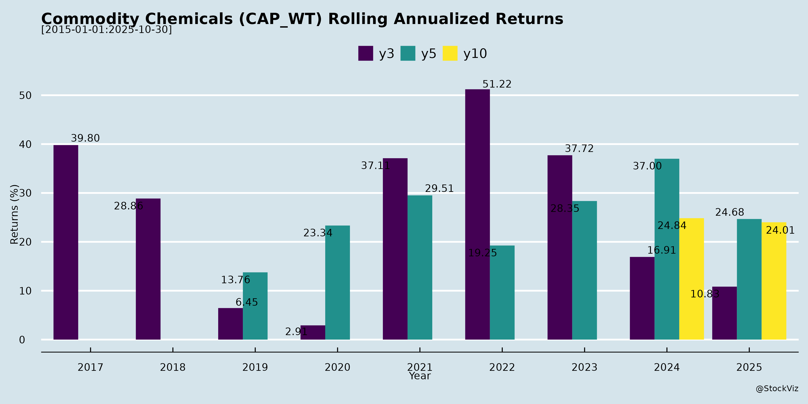

asof: 2025-11-29
Indian Commodity Chemicals Sector Analysis
Based on Q2/H1 FY26 Earnings Transcripts (Tata Chemicals, Deepak Fertilisers, GNFC, Chemplast Sanmar, OCCL, etc.)
The sector faces short-term pressures from oversupply and imports but shows resilience through domestic demand, ADD protections, and capacity expansions. Key sub-segments: Soda Ash, PVC, Fertilisers/TAN, Ammonia/IPA, Insoluble Sulphur, Nitric Acid/AN Melt.
Headwinds (Short-term Challenges)
Tailwinds (Supportive Factors)
Growth Prospects (Medium-Long Term)
| Key Metrics Snapshot | Q2 FY26 | H1 FY26 YoY |
|---|---|---|
| Revenue Growth | +9-19% | +13% (Deepak) |
| EBITDA Margins | 15% (Deepak), 16.8% (OCCL) | Stable/Up (Tata +67% standalone) |
| PAT Growth | Stable/+16% | +11% (Deepak) |
Key Risks
Overall Summary: Sector resilient amid oversupply (headwinds dominate Q2), buoyed by ADD/domestic demand (tailwinds). Growth anchored in expansions/specialties (FY27 inflection), but risks from imports/volatility persist. Positive LT outlook (tyre/agri/EV drivers); monitor ADD notifications & RM costs for near-term triggers. Neutral-Positive rating; watch H2 FY26 for capex fruition.
asof: 2025-11-29
Analysis of Indian Commodity Chemicals Sector
The provided filings from companies like Tata Chemicals, Deepak Fertilisers, GNFC, Chemplast Sanmar, Gujarat Alkalies, Thirumalaichemicals, J.G. Chemicals (zinc oxide focus), IG Petrochemicals, Amines & Plasticizers, Andhra Sugars, Sree Rayalaseema, and Indo Borax offer insights into basic chemicals (e.g., soda ash, fertilizers, zinc compounds, plasticizers). These reflect a mix of operational updates, compliance issues, expansions, and financial disclosures. Below is a structured analysis of headwinds, tailwinds, growth prospects, and key risks for the sector.
Headwinds (Challenges/Constraints)
Tailwinds (Supportive Factors)
Growth Prospects
Key Risks
| Risk Category | Description | Examples from Filings | Mitigation |
|---|---|---|---|
| Regulatory/Environmental | Penalties, ESG scrutiny, tax disputes. | Tata penalty; GNFC ESG 51; Thirumalaichemicals GST notice. | Compliance filings; J.G.’s certifications (ISO, WHO-GMP). |
| Operational | Plant delays/shutdowns, raw material sourcing. | IG Petro extension; Indo Borax resumption; zinc scrap dependency (J.G.). | Expansions (J.G. Gujarat); global networks (100+ suppliers). |
| Financial/Market | Commodity price volatility (LME-linked); tyre sector reliance (~85% for J.G.). | Zinc pricing; forex exposure. | Hedging (derivatives); diversification (zinc sulphate, batteries). |
| Compliance/Investor | KYC/IEPF issues; director changes. | Amines/Sree Rayalaseema dividends; Andhra Sugars AGM. | Reminders; governance policies. |
| Execution | Capex delays (R&D, plants). | J.G. FY27 greenfield; IG Petro timeline slip. | Zero-debt flexibility (J.G.). |
Overall Sector Summary: Indian commodity chemicals shows resilience (e.g., J.G. Chemicals’ stellar growth) amid headwinds like regulations and ops disruptions. Tailwinds from investments/diversification support 10-12% CAGR (zinc oxide/fertilizers). Growth hinges on tyres/EVs/ceramics, but risks from compliance/volatility persist. Positive: Recycling/sustainability edge; monitor J.G. as bellwether (India’s #1 zinc oxide maker).
asof: 2025-11-29
The provided documents primarily cover earnings calls and filings from key Indian players in commodity chemicals (e.g., Tata Chemicals - soda ash; Deepak Fertilisers - TAN/IPA/Ammonia; GNFC - fertilizers/nitric acid/TDI; Chemplast Sanmar - PVC/custom chemicals; OCCL - insoluble sulphur; Amines & Plasticizers - amines/solvents; others like GHCL). These reveal a cyclical sector under short-term pressure from global oversupply (esp. China) but buoyed by domestic demand, protectionism, and expansions. Below is a structured summary of headwinds, tailwinds, growth prospects, and key risks.
Short-term (FY26): Challenging with oversupply/pricing pressure (soda ash/PVC/sulphur) capping margins at 10-19% despite ADD. Volumes stable domestically but exports muted (US tariffs). Revenue growth modest (e.g., Tata +19% standalone; Deepak +9-13%).
Medium-term (FY27+): Optimistic via expansions (multi-billion capex pipeline), domestic protectionism, and tyre/agro/infra demand. Sector poised for 2-5% CAGR globally, higher in India (tyres/fertilizers). Shift to specialties/R32 enhances resilience.
Strategic Focus: Cost control, ADD advocacy, green energy, R&D (Amines 43 new products). Bull case: Domestic self-reliance + EV/mining boom (EBITDA 20-25%). Bear case: Prolonged China dumping + input spikes (margins <10%).
Data as of Q2/H1 FY26 transcripts (Nov 2025); sector cyclicality warrants monitoring China/global trade.
asof: 2025-11-30
The provided documents cover financial results and press releases from key players in the Indian commodity chemicals sector (e.g., Tata Chemicals, Deepak Fertilisers, GHCL, Chemplast Sanmar, Amines & Plasticizers, OCCL, Lords Chloro Alkali, GNFC). These firms primarily deal in soda ash, fertilizers, PVC, caustic soda, amines, insoluble sulphur, and nitro chemicals. Overall, the sector shows resilient volumes amid pricing headwinds, with standalone improvements via cost discipline but consolidated pressures from imports and volatility. H1 FY26 revenue growth averaged ~5-15% YoY where reported, but EBITDA margins contracted 100-400 bps due to external factors. Below is a structured analysis of headwinds, tailwinds, growth prospects, and key risks, synthesized from common themes.
| Risk Category | Details | Mitigation Noted |
|---|---|---|
| Imports/Competition | Persistent cheap Chinese/EU/US imports; ADD delays (GHCL, OCCL). | Duties filed; domestic focus. |
| RM/Commodity Volatility | Ammonia/EO/sulphur spikes (Deepak, Amines); sulphur +50% US duty risk (OCCL). | Backward integration, hedging. |
| Execution/Demand | Capex delays (GHCL greenfield slow); monsoon/economic slowdown (Deepak volumes -7% QoQ). | Phased commissioning (Q4 FY26). |
| Geopolitical/Macro | Trade wars, forex (Deepak OCI forex hedges); global oversupply (soda ash). | Diversification, cost controls. |
| Financial/Regulatory | Debt rise (Deepak net debt +₹97 Cr); IT/penalty appeals (Deepak, GNFC). | Strong cash flows (Deepak ops ₹47 Cr). |
| Aspect | Sector Snapshot (H1 FY26) |
|---|---|
| Performance | Revenue +5-60% YoY (driven volumes); EBITDA -15% avg., margins 15-20% via costs. PAT resilient (e.g., Lords +743%). |
| Net | Mildly Positive: Tailwinds from domestic demand/costs offset headwinds; expansions position for 10-15% CAGR. |
| Outlook | Cautious optimism—H2 growth via projects/duties; risks tilted to imports/volatility. Focus: Specialties (28-50% rev share), green energy. |
The sector demonstrates defensive resilience (cost focus, policy wins) but needs import safeguards for sustained margins. Investors should monitor ADD outcomes and capex execution. Data as of Nov 2025 reports.
Copyright © 2023 SAS Data Analytics Pvt. Ltd. All rights reserved.